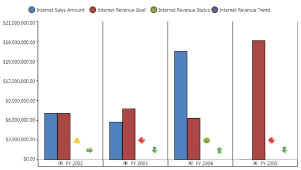

In general, for column type charts, the horizontal grid line belongs to the secondary axis. To disable the horizontal grid lines for these types of charts, you need to use the ShowGridLines property of the secondary axis.
The following illustration describes how the chart will look after the horizontal grid lines are disabled:

Figure 35: An OlapChart with horizontal grid lines disabled
The following code snippet describes how to disable the horizontal grid lines:
|
[C#]
this.olapChart.Series[0].Area.SecondaryAxis.SetValue( ChartArea.ShowGridLinesProperty, false);
|
|
[VB]
Me.olapChart.Series(0).Area.SecondaryAxis.SetValue( ChartArea.ShowGridLinesProperty, False)
|
 Note: For bar type charts, such as
Bar, Stacking bar, and Stacking100 Bar you can disable the horizontal grid lines
by using the ShowGridLinesProperty of the PrimaryAxis.
Note: For bar type charts, such as
Bar, Stacking bar, and Stacking100 Bar you can disable the horizontal grid lines
by using the ShowGridLinesProperty of the PrimaryAxis.